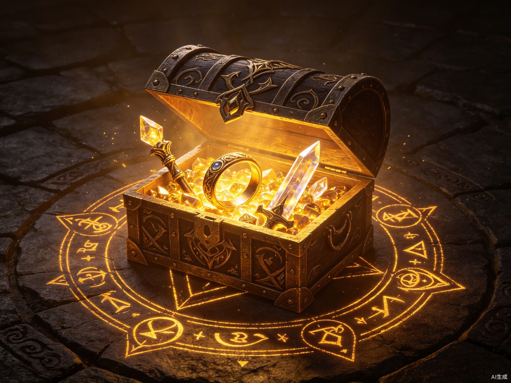

I. 创意名称与介绍
创意名称：艾尔登法环 — 黄金树之影互动体验站
《艾尔登法环》（Elden Ring）是 FromSoftware 与乔治·R·R·马丁联手打造的开放世界黑暗幻想动作 RPG，自 2022 年发售以来全球销量突破 2500 万份，荣获 TGA 2022 年度最佳游戏。然而，这款伟大的作品在中文社区的内容生态方面仍有巨大的提升空间。
我们的创意是打造一个沉浸式互动体验网站——一个属于中国艾尔登法环玩家的「交界地百科」。它不仅是一个信息聚合平台，更是一个融合了地图探索、Boss 图鉴、流派模拟器、社区攻略分享的一站式互动体验站，让玩家无需在多个平台间反复跳转即可获取完整的游戏体验。
产品形态：响应式 Web 应用（网站），支持桌面端与移动端浏览器访问。
「在黄金树的光辉之下，即使是最卑微的褪色者，也能书写属于自己的传奇。」
II. 创意背景与数据
艾尔登法环在全球范围内取得了空前成功，但中国玩家社区缺乏一个统一、高质量、本地化的互动体验平台。现有资源分散在 B 站、贴吧、Wiki 等多个平台，信息碎片化严重，新手入门门槛高。

III. 核心功能模块
本产品围绕艾尔登法环玩家的核心需求，设计了四大功能模块，覆盖从入门到精通的完整游戏旅程。
互动地图探索器
基于 Leaflet.js 构建的高精度交界地互动地图，标注全部地下城、赐福点、NPC 位置、隐藏道具，支持筛选、路径规划、收藏标记，玩家可自定义探索路线。
Boss 图鉴与战术面板
收录 168+ Boss/首领的详细图鉴，包含弱点属性、掉落物品、战斗机制分析，并配有社区投票的难度评级和推荐流派攻略，帮助玩家高效通关。
流派模拟器
玩家可自由搭配武器、护符、祷告、法术、战灰，实时计算伤害数值、属性需求、防御面板，一键生成流派 Build 卡片，方便分享给社区好友。
碎片化叙事百科
以可视化时间线的方式还原艾尔登法环的碎片化故事，将分散在物品描述、NPC 对话、环境细节中的线索串联成完整的叙事脉络，支持多结局路线对比。
社区攻略工坊
内置 Markdown 编辑器，玩家可撰写、发布、点赞攻略文章。支持嵌入视频、图片、流派卡片，经社区投票后可入选「精选攻略库」，形成高质量 UGC 内容生态。
新手引导系统
为新人量身定制的分级引导，从「如何选择初始礼物」到「一周目高效路线推荐」，以交互式 Checklist 的形式陪伴玩家度过最艰难的前期，大幅降低入门门槛。
IV. 目标用户与痛点
新手褪色者
入门玩家 · 0-50 小时痛点：游戏难度极高，不知道去哪升级、打不过 Boss、不知道选什么武器。现有攻略信息分散且不够直观，容易在前期就放弃游戏。
需求：一个清晰的新手引导和高效的 Boss 攻略，帮助他们度过「劝退期」。
老练调查员
核心玩家 · 200+ 小时痛点：追求最优 Build 配装时需要在多个工具间反复切换计算；想要深入挖掘隐藏剧情线索却缺乏系统化的叙事整理。
需求：专业的流派模拟器和碎片化叙事百科，满足深度探索的乐趣。
内容创作者
攻略作者 · B 站 / 贴吧 UP 主痛点：撰写攻略时缺乏统一的排版和发布平台，Build 数据需要手动计算截图，分享效率低。
需求：一站式的攻略创作工具和可分享的流派卡片，提升创作效率。
休闲观光客
剧情向玩家 · 关注世界观痛点：对战斗不感兴趣但热爱游戏的世界观和故事，现有社区缺乏对碎片化叙事的系统整理。
需求：可视化叙事百科和多结局对比，帮助他们理解这个庞大的暗黑世界。
V. 技术实现方案
本项目采用前后端分离架构，优先保障用户体验和性能，同时控制开发成本。核心技术栈选型兼顾开发效率、可维护性和社区生态。
| 技术层 | 选型 | 用途 |
|---|---|---|
| 前端框架 | React + Next.js | 服务端渲染、SEO 友好、快速首屏加载 |
| 地图引擎 | Leaflet.js + GeoJSON | 高精度互动地图渲染与标注 |
| 数据可视化 | D3.js | 流派面板数据图表、叙事时间线 |
| 后端服务 | Node.js + PostgreSQL | 用户系统、攻略存储、社区互动 |
| 部署方案 | Vercel + Cloudflare CDN | 全球加速、自动扩缩容、低成本运营 |
VI. 开发路线图
核心架构搭建与互动地图
完成项目脚手架搭建、数据库设计；实现交界地互动地图基础功能，包括赐福点、地下城、NPC 位置的标注与筛选。
Boss 图鉴与流派模拟器
完成 Boss 数据库录入与图鉴页面；开发流派模拟器核心算法，实现武器/护符/祷告的自由搭配与伤害计算。
叙事百科与社区功能
构建碎片化叙事时间线；开发社区攻略工坊的 Markdown 编辑器与投票系统；完善新手引导 Checklist。
优化、测试与上线
全面性能优化（地图加载速度、移动端适配）；用户测试与反馈迭代；部署上线并启动社区冷启动运营。
VII. 价值与意义
社会价值：降低文化消费门槛
艾尔登法环作为一款优秀文化产品，其碎片化叙事和极高难度在中国玩家中形成了「劝退」文化。本项目通过系统化的引导和直观的互动体验，帮助更多玩家跨越门槛，享受这款作品带来的艺术价值与文化体验，推动游戏文化的正向传播。
商业价值：填补社区平台空白
中国拥有超过 500 万艾尔登法环玩家，但至今没有一款整合度高、本地化好的中文互动平台。本项目通过构建高粘性社区，形成 UGC 内容飞轮，未来可通过广告、高级会员功能、周边电商导流等方式实现可持续的商业闭环。
技术价值：游戏资料站的标杆实践
本项目的互动地图、流派模拟器、叙事可视化等技术组件，可以沉淀为通用化的开源组件，服务于更多游戏社区的数字化建设，具有行业示范效应。
- 为中国 500 万+ 艾尔登法环玩家提供一站式互动体验平台
- 通过系统化引导降低游戏门槛，让更多人享受优秀文化产品
- 构建高质量 UGC 社区，形成可持续的内容生态
- 技术组件可复用，为游戏社区数字化建设提供标杆